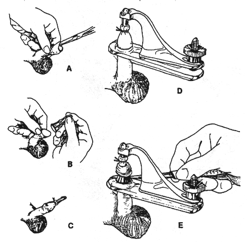

Circumcision procedure
(Gomco Clamp method)

The following directions are provided for conduct of
circumcision operations with the GOMCO clamp:
The Gomco Technique
- Stretch the preputial opening.
- Break preputial adhesions [synechial membrane] so that
the foreskin is completely retractile. [Fig. A above.]
- Retract the foreskin until you can see the corona.
Check the glans for any hidden adhesions.
- Apply a small amount of lubricant such as K-Y Jelly to
the glans so it won't stick to the inside of the bell.
- Apply the bell-shaped plunger over the glans. [Fig. B
above.] The bell should fit easily over the glans so they
cover the corona. Too small a bell may injure the glans and
fail to protect the corona. If stretching the preputial
opening does not allow the bell to be inserted in the
preputial space and entirely cover the glans, a dorsal slit
may be necessary.
- Pull the prepuce over the bell. [Fig. C above.] The
foreskin should not be stretched or pulled too snugly over
the bell. If it's pulled up too tightly, it's possible to
remove too much shaft skin or to pull the urethra up so you
get a tangential cut through the urethra as well as the
skin.
- Judge the amount of the shaft skin left below the
corona; the skin should be relaxed and supple.
- After you're sure of the dimensions, apply the plate of
the clamp at the level of the corona. [Fig. D above]
- With everything in proper alignment, tighten the clamp.
This squeezes the prepuce between the bell and the clamp to
make it blood-free. Be sure the weight of the clamp doesn't
distort the anatomy so there isn't a proper amount of skin
in the clamp.
- Make a circumferential incision with a cold knife, not
an electrosurgical instrument. [Fig. E above]
- Leave the clamp in place at least five minutes to allow
clotting and coagulation to occur.
- Remove the clamp and apply antiseptic ointment
(Betadine) to the crush line.
Apply a light dressing or loin cloth arrangement to keep
the ointment from rubbing off.
- If you remove the clamp prematurely, the crushed edges may separate and
bleeding will occur. When this occurs, suture the
mucocutaneous margin, being careful to avoid deep sutures
that might penetrate the urethra. If the whole edge
separates, treat as a freehand circumcision, placing
quadrant sutures and sewing between them with fine
stitches.
- Have the baby watched overnight for any signs of
bleeding.
- If late separation occurs, it's best to keep the wound
clean and let it heal secondarily rather than try to suture
it and risk development of stricture or fistula. Skin of
this area tends to re-epethelialize rapidly.
[CIRP Note: This article was published at a
time when most doctors still believed the myth that newborn
babies could not feel pain. Consequently, it says nothing
about the extreme pain, stress, and trauma produced by the
above described crushing and cutting procedure.]